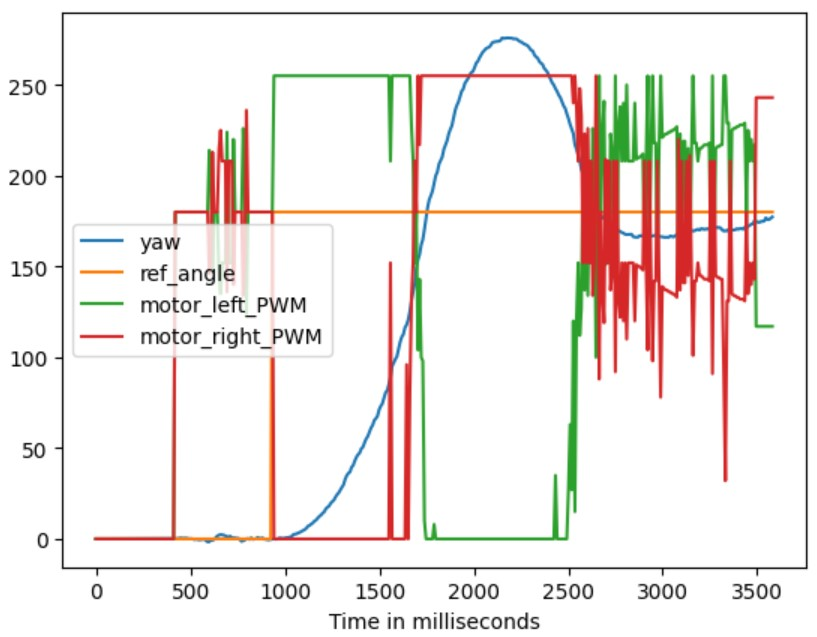
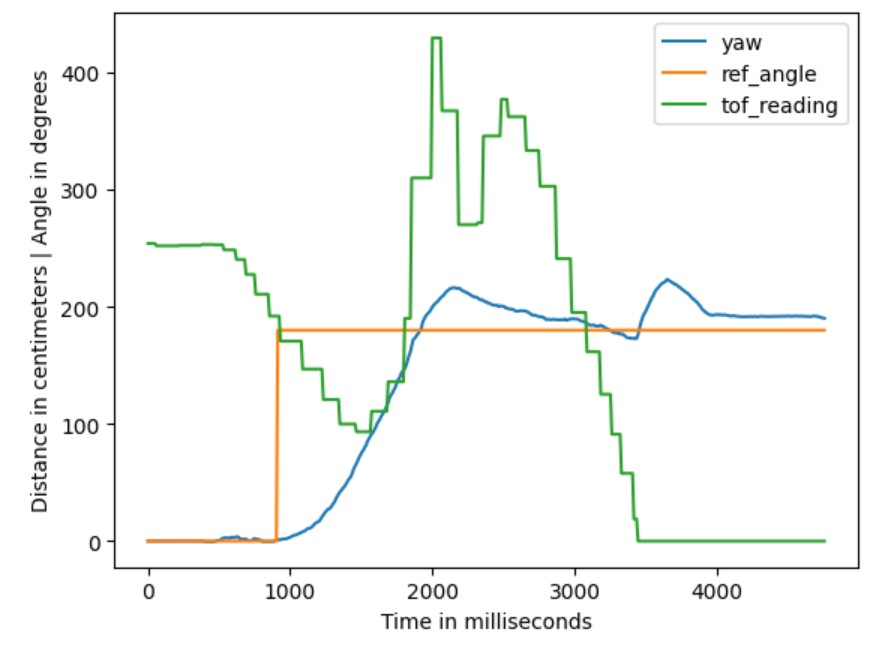

Objective
The aim of this lab is to integrate previous work and enable the robot to perform fast stunts. The selected stunt task is orientation control, where the goal is to drive the robot fast forward towards the wall and initiate a drift (a 180-degree turn) when it's close.
Lab Tasks
Drifting Implementation
For initiating a drift effect, it is required to add orientation PID control to the motor PWM values while controlling the motor's
forward motion. For this purpose, a motor control function named turn() was defined, as shown below. In this function,
the two motor wheels rotate in the same direction, allowing the robot to continue moving forward; and by assigning different speeds for the left and right motors, the robot can turn while continuing its forward movement.
In the main loop, the IMU PID calculation and the drift control were implemented as parallel if blocks, as shown below. The drift functionality was integrated in a way that the standalone in-axis orientation control is still able to work seperately, enhancing the robot's maneuverability.
When the drift function is not activated and only the orientation control is enabled, the orientation control block directly controls the motors based on the angular PID results. In this lab, to perform the drifting stunt, the orientation control block checks the drift control flag. If the flag is raised, the block does not directly control the motors; instead, it passes the pid_ctrl PWM value to the drifting control block to combine it with the default forwarding PWM value.
During the drifting stunt, the reference angle is initially set to 0, and the angular PID control tries to maintain the robot's direction unchanged, resulting in almost the same PWM values for both motors. When the ToF sensor detects that the robot is within a certain distance from the wall, the reference angle is set to 180. This causes the PWM values for the left and right motors to be adjusted by adding or subtracting the PID control values from the original forward values, enabling the robot to turn.
Results
In the video above, with Kp=5, Ki=0.005, Kd=500, and forwarding PWM value=180, the robot completed the drifting stunt while it is evident that there was significant overshoot in the orientation control. The sensor data and motor control values with timestamps are shown below. Disregard the erratic spikes caused by the derivative kick, and it is quite apparent that shortly after the initiation of orientation control, the PWM values for both left and right motors saturate to ±255, indicating that Kp is too large.

In this video, with Kp=1, Ki=0.005, Kd=500, and PWM=150, the value of Kp was decreased to reduce overshoot, and the forwarding PWM value was also slightly decreased to complete the 180-degree turn before hitting the wall. It can be observed that the drift was completed successfully with minimal overshoot.
Building on the previous attempt, this trial set the parameters to Kp=1.5, Ki=0.005, Kd=500, and PWM=200, slightly increasing Kp and PWM. The results remained quite satisfactory, with little overshoot and faster robot movement. The changes in angle and distance throughout the process are shown in the figure below, demonstrating significantly reduced overshoot comopared to the first trial.

Discussion & Conclusion
This lab was quite enjoyable and implementing the stunts was an exciting experience. When adding new features, it was interesting to twist my mind a little bit to figure out a best way to arrange the code logic to enhance the capabilities of the robot, making it more versatile.